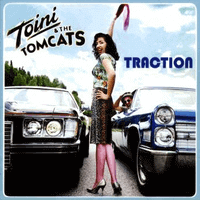

Toini and the Tomcats - Traction (Album, 2001)
01 - Caught In A Storm (3:59)
02 - Kill You (2:40)
03 - Honey Bee (2:09)
04 - True Love (3:14)
05 - Charity (2:45)
06 - Crooked (2:55)
07 - Roses (4:53)
08 - Love Me Like I Love You (3:09)
09 - Another Day (2:46)
10 - Ready To Go (2:14)
11 - Turtle Dove (2:03)
12 - Dear Whoever (2:33)
13 - Sea Song (2:12)
© Musikkpartner :: [EACD 5]
Notes
Norway.
Toini Knudtsen - Vocals
Arne Ertnaes - Double bass, Backing Vocals
Ned Leukhardt - Drums
Martin Caspersen - Guitar, Piano, Organ, Backing vocals
Per Madsen - Percussion on track 06
Arne Frang - Saxophone on tracks 05, 09
Svein Johannessen - Trombone on track 05
Sveinung Lilleheier - Steel guitar on tracks 03, 09
Recorded at Silvertone Studio, mastered at Lydmuren, mixed at Brygga Studio
Engineered by Rune A. Jørgensen. Produced by Martin Caspersen. Mastered by Fritjov Lindemann
reference information: Discogs®
Review
139/366 (Project 366)
Female fronted Rock and Roll variety with modern and even a bit (neo) Rockabilly craze. Wavy tunes from one song to another. Each song has its own wind and its own blow! I think it is kind of progressive rock with influence of schlager-oriented pop rock-a-billy twist, for enjoying on and around the stage. An album with a completely rocking and old fashioned band style. And with huge importance of incited lady's singing. Tremendous chic! A piano (and even an organ) that sounds in songs on the album - well decorates compositions. Perhaps this is no less striking feature of the album than female vocals.
Instrumental playing with various techniques, approaches and trends. Quite scurrying sound, since band is in a hurry to gratify you by sound and rock you by voice! Show as is. The tracks abound with ideas, tides, wildest solos, riffs and bumps! For example, how furious is "Kill You" with its wild rockabilly and (neo) shade. Full of assertive nifty drive. But how tuny are "Caught in a Storm" or "Honey Bee" with its lovely vintage mood and rockin' roll. Or how modern is sound of "Love Me Like I Love You", but at the same time old-fashioned. Modern Rockabilly with a boogie piano. On a similar wave two another songs - "Another Day" and "Charity". Where the charm of female vocals is especially noticeable and playful. Vintage pop schlagers with rockabilly flavour. These tracks are also with brass section and "Another Day" even with steel guitar. Fancy! However, I think the band's most revealing style in songs like "True Love". Rockin' and rollin' loud rockabilly. Sonorously, but somehow a little sluggishly. Although bright enough. Or in songs like "Crooked". Seething cocktail of sounds. Songs "Roses" and "Dear Whoever" reveal the most intimate sides of a voice. And songs "Ready To Go", "Turtle Dave" are full of drive and fun. "Sea Song" is an exclusive and quite hit track.
Almost each track with a different background: from completely traditional and vintage to something more experimental and extravagant. Even so, that a little bit discouraged. Perhaps, it is amazing on open air and with live sound. But the recordings were slightly obscured. Sound is intended to be cool, even glam a bit with groovy groove and with the shade of pop rockin'. Also lyrics are pretty poetic and ruthless.